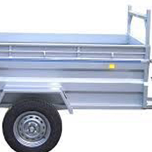
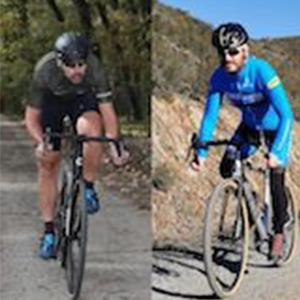
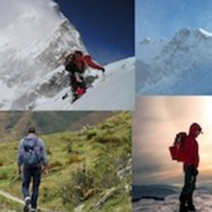
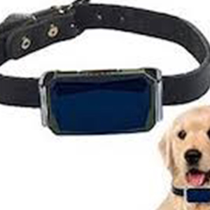

Otras Aplicaciones y Usos
Personas y Mascotas: También proporciona seguimiento de trayectos y comportamiento, con
alertas de
seguridad para personas y mascotas.
Control Remoto de Instalaciones: Finalmente, GONOR facilita el control remoto de grupos
electrógenos y
otras instalaciones eléctricas, así como la gestión de dispositivos móviles para personal profesional.